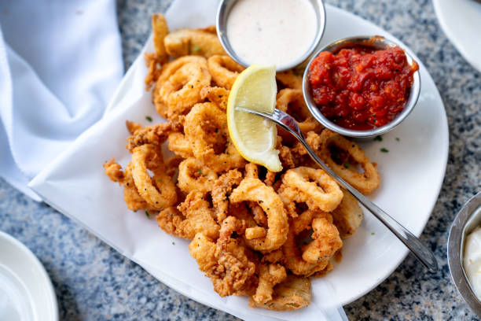

Calamari

Air Fryer Calamari
This calamari air fryer recipe lets you enjoy crispy calamari guilt-free!
Serve with cocktail sauce and lemon wedges if desired.
Ingredients
- ½ cup all-purpose flour
- 1 large egg
- ¼ cup milk
- 2 cups panko bread crumbs
- 1 teaspoon sea salt
- 1 teaspoon ground black pepper
- 1 pound calamari rings, patted dry
- nonstick cooking spray
Steps
- Preheat an air fryer to 400 degrees F (200 degrees C).
- Place flour in a bowl. Whisk egg and milk in a separate bowl. Combine panko, salt, and pepper in a third bowl.
- Coat calamari rings first in flour, then in egg mixture, and finally in panko mixture.
- Place rings in the basket of the air fryer so that none overlap. Work in batches if needed. Spray tops with nonstick cooking spray.
- Cook in the preheated air fryer for 4 minutes. Flip rings, spray with nonstick cooking spray, and cook until browned and crispy, about 3 minutes more.